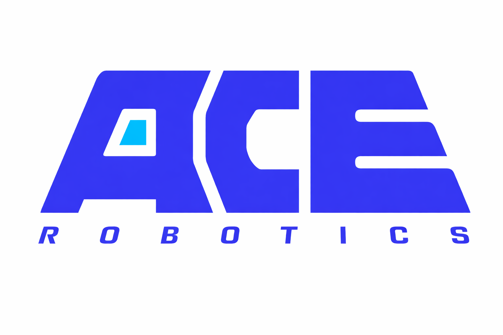

Grounding data, unified.
Robot trajectories, egocentric interactions, and general visual data are converted into supervision with answers that can be checked against annotations.

ACE-Brain TeamCan diverse, verifiable supervision bring a 9B model to frontier-level spatial grounding? ACE-Brain-0.6 fine-tunes Qwen3.5-9B on approximately 1.5 million samples and exceeds GPT-6 Astra on four of seven public grounding benchmarks, with a higher average under the manuscript’s evaluation protocol.
Robot trajectories, egocentric interactions, and general visual data are converted into supervision with answers that can be checked against annotations.
With the backbone and training recipe fixed, successive data releases expand both sample count and the range of grounding scenarios.
A 9B model improves on its base checkpoint across six of seven public benchmarks and leads the compared models on RobotGrounding.
Grounding connects a language instruction to a physical scene. Our pipeline turns diverse observations into points, boxes, counts, and spatial judgments.
Coordinates are integers normalized to [0, 1000]. A shared text interface covers target identification, complete instance coverage, spatial reasoning, and interaction grounding.
[x, y][[x, y], …][x₁, y₁, x₂, y₂]countyes / no / noneA shared evaluation protocol across general-purpose and embodied models. Explore the public benchmarks or the held-out robot-scene evaluation.
Selected models · higher is better
Avg-7 is the unweighted mean of the seven public benchmark scores. RobotGrounding is excluded.
Bold: best score across all compared models. Scores use the displayed precision of the manuscript. Each benchmark uses its own official metric.
All models use the same harness and benchmark-specific prompt, temperature 0.2, and a 128-token output budget. PixMo-Count uses 1,024 tokens. Closed models are evaluated through their APIs with the same questions and scorer.
ACE-Brain-0.6 trails Astra on PixMo-Count, RefSpatial, and PointArena. The largest gap is RefSpatial: 71.84 versus 80.14. Relative to Qwen3.5-9B, PixMo-Count decreases from 90.35 to 86.96. These grounding evaluations do not establish end-to-end robot manipulation success.
Across releases from 0.26M to 1.55M samples, the seven-benchmark average rises from 69.3 to 75.4.
The backbone and recipe stay fixed. Sample count and supervision coverage grow together; the main series does not isolate data volume alone.
RobotGrounding contains 2,591 questions on held-out robot manipulation frames. Explore actual benchmark samples and their reference annotations.
Reference annotations from the benchmark, not live model predictions.
Tasks cover referring, small objects, task targets and destinations, all-instance pointing, counting, object and attribute absence, spatial judgments, and correspondence across cameras. The overall score is an unweighted mean over 14 scoring groups.
Points must fall inside the reference boxes; every-instance answers require one point per instance. Boxes are scored by intersection-over-union, while counts and categorical answers require exact matches. Box-based point evaluation can be lenient for thin or hollow objects.
The manuscript studies GPT-6 Astra as a reference for spatial perception. These cases illustrate why selecting the right visual evidence matters for physical action.
Astra handles diverse object, ordinal, multi-instance, spatial, and functional queries. Fine boundaries and spatially constrained placement remain difficult: a point can be near the correct part yet outside the valid region.
Technical report and methodology
Release link to followProject repository and updates
Release link to followACE-Brain-0.6-9B model repository
Release link to followGrounding data and benchmark
Release link to followCite the technical report: arXiv:2610.27040.
@misc{wang2026acebrain06scalingspatialgrounding,
title={ACE-Brain-0.6: Scaling Spatial Grounding for Physical Foundation Models},
author={Yinhe Wang and Tao Tao and Zexin He and Shuang Luo and Wei Mao and Yao Mu and
Feng Pan and Hanming Deng and Lewei Lu and Zhi Hou and Xingang Pan and Dahua Lin and
Dacheng Tao and Xiaogang Wang},
year={2026},
eprint={2610.27040},
archivePrefix={arXiv},
primaryClass={cs.RO},
url={https://arxiv.org/abs/2610.27040},
}